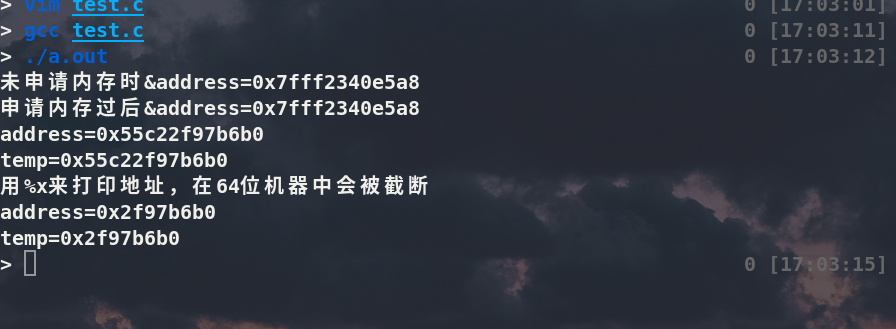

在复习数据结构链表那一章时对创建头指针然后指向首元节点或者头节点(两者是不同的东西)的具体实现过程有些许疑问，它们在内存中是怎么工作的呢？
于是我写了个小程序来验证了一下
#include<stdio.h>
#include<stdlib.h>
struct test
{
struct test* next;
int data;
};
int main ()
{
struct test* temp=NULL ;
struct test* address;
printf("未申请内存时的&address=%p\n",&address);
address=(struct test*)malloc(sizeof(struct test));
address->data=10;
address->next=NULL;
temp=address;
printf("&address=%p\n",&address);
printf("address=%p\n",address);
printf("temp=%p\n",temp);
printf("用%%x来打印地址，在64位机器中会被截断\n");
printf("address=%#x\n",address);
printf("temp=%#x\n",temp);
return 0;
}
执行结果
struct test* address计算机会给变量address分配一个内存，然后当address=(struct test*)malloc(sizeof(struct test)); 执行后，计算机就会给指针address的内存中填入新申请的大小为(sizeof(struct test))的内存的地址．temp=address就是将address的内存装载的内容赋值给temp.
本质是有两个指针同时指向一个结构内存(struct test). 而不是address指向结构内存，temp再指向address
一个有趣的发现就是在64位机上面%x打印16进制只能打印出32位数而%p能够完美打印出48位地址(64位机用48位地址)，所以打印地址还是老老实实用%p
本博客所有文章除特别声明外，均采用 CC BY-SA 3.0协议 。转载请注明出处！